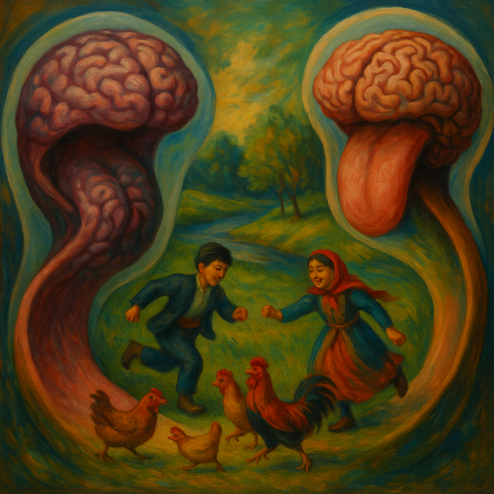

Wittgenstein in Azerbaijani: Three Propositions Re-Imagined
Introduction
This paper does not “translate” Wittgenstein word-for-word. It uses Azerbaijani as a philosophical instrument to dissolve ambiguity and to generate new clarity. Where English spreads meaning and German often remains technical, Azerbaijani condenses ideas into interlocking forms.
We re-express three key Tractatus propositions and add three Azerbaijani aphorisms inspired by the same logic. Each section gives the original line, an Azerbaijani rendering, and a short commentary. A brief glossary records the new terms and shades of meaning.
1) Whereof One Cannot Speak… (7)
“Whereof one cannot speak, thereof one must be silent.”
Nədən danışamsa, susmaq qoludur.
Commentary
In English, silence appears as a rule (“must be silent”). In Azerbaijani, susmaq qoludur—“it is the arm/branch of silence”—turns silence into a state of being. The unsayable does not vanish; it extends into a domain where speech cannot go but thought and existence persist. The unsayable is not nothingness, but a limb of silence—a living continuation of meaning beyond articulation.
2) A Picture Presents a Possible State of Affairs (2.202)
“A picture presents a possible state of affairs.”
Çizəm mümkün bir subutun naxışıdır. (Static: a çizəm is the pattern of a possible proof.)
Şəkil mümkün bir durumun saçıdır. (Dynamic: an image is the emanation of a possible state.)
Commentary
Wittgenstein’s Bild is not a photograph; it is a model/depictive form that can correspond to reality. Azerbaijani distinguishes two ontologies that English blurs:
- Static: çizəm names an instantaneous, motionless imprint—a micro-structure of possibility, a crystalline pattern of proof.
- Dynamic: şəkil … saçıdır casts “picture” as emanation, a gentle radiation/flow from a possible state.
These two renderings uncover both the imprint and the flow latent in 2.202.
3) The Limits of My Language… (5.6)
“The limits of my language mean the limits of my world.”
Dilimin sərhəddi mənə bir qalışdır. (The boundary of my language is a stand for me.)
Commentary
Wittgenstein’s line is often treated as a descriptive identity of two limits. The Azerbaijani version shifts to experience: the boundary of language is where I am stopped and held—a point of arrest and reflection. Two limits are implicit: a universal limit (what can be said at all) and a personal limit (what I can express). At language’s edge, movement stops, yet being continues. Azerbaijani names that edge as a qalış—a stand.
Azerbaijani Aphorisms Inspired by Wittgenstein
1. Dilinən gələr, durum yaşiyar — dilinən gedər, subut çağırar.
What comes through language, the state lives; what leaves through language, proof calls.
Language both animates states and, when it withdraws, summons proof; it is at once creator and witness.
2. Can qalar, dil donər, sərhəd qalar.
The self remains, language turns, the boundary stays.
Existence persists at the edge of language; speech may shift, but the limit abides.
3. Durum subutla donərkən dil bitər, subut durumla donərkən dil əsər.
When state congeals with proof, language ends; when proof congeals with state, language trembles.
At the freeze-point of state and proof, language either falls silent or vibrates.
Glossary
- Susmaq qoludur — “the arm/branch of silence”: the unsayable as a living extension of meaning beyond words.
- Çizəm — neologism: an instantaneous, minimal mark of perception; the smallest depictive imprint formed at the moment of observation, before it becomes a line, trace, or picture.
- Şəkil … saçıdır — “image is the emanation”: the dynamic, outward flow of a possible state.
- Qalış — “stand/stay”: the existential stop-point at language’s edge; movement halts but presence remains.
- Durum / Subut — “state (of affairs) / proof”: paired terms for structure (durum) and grounding (subut).
Conclusion
Azerbaijani does not merely carry Wittgenstein’s sentences; it re-structures them. Susmaq qoludur reframes silence as a living domain; çizəm / şəkil…saçıdır distinguishes imprint from emanation; qalış turns the limit of language into an existential stand. These are not decorative paraphrases but new philosophical expressions that reveal dimensions hidden by English phrasing or German technicality. In Azerbaijani, Wittgenstein’s logic becomes a felt structure.

Painting by Resa and me